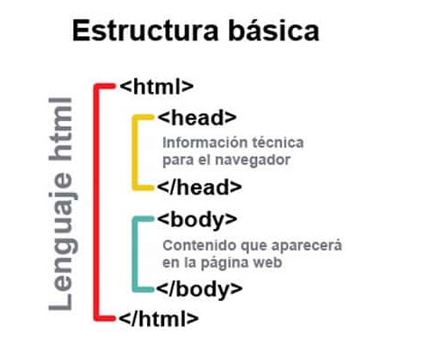

Este sitio esta orientado para conocer los diferentes tipos de etiquetas basicas y sus respectivos atributos y valores al moneto de desarrolar un sitio web.
Etiquetas HTML

< body> < /body>:Indica la parte del cuerpo del contenido de un documento HTML. Es una etiqueta esencial para cualquier documento ya que indica donde empieza el contenido visible del documento.
< div> < /div>:Un elemento que es usado mayoritariamente para agrupar otros elementos y actuar como plantilla de otros controles. La etiqueta < div> nos ayuda a estructurar el documento en secciones.
< strong> < /strong>:< strong> < /strong>:Si tienes mucho texto, es importante poder dar énfasis a una parte en concreto, con la etiqueta strong lo podemos hacer.
< SPAN> < /SPAN>:Con la etiqueta podemos personalizar el estilo de solamente una parte del texto.>
< head>< /head>: La parte superior del documento HTML, es donde podremos indicar los metadatos: título del documento, hojas de estilos, javaScript, CSS…
Atributos y Valores
Los atributos básicos:Se utilizan en la mayoría de etiquetas HTML y XHTML, aunque adquieren mayor sentido cuando se utilizan hojas de estilo en cascada (CSS):
Los atributos de internacionalizacion:Se utilizan en aquellas páginas que muestran sus contenidos en varios idiomas y las que quieran indicar de forma explícita el idioma de sus contenidos:
Los atributos de eventos:Se utilizan en las páginas web que incluyen código JavaScript para realizar acciones dinámicas sobre los elementos de la página.
Los atributos de Foco:Se le denomina foco o focus, cuando un control o elemento del documento ha sido seleccionado. Cuando ese elemento deja de estar seleccionado, "pierde el foco" y es el nuevo elemento seleccionado el que se dice que tiene "el foco".